Blindhet & Internet
Hur skiljer sig en synskadads internetupplevelse från vår?
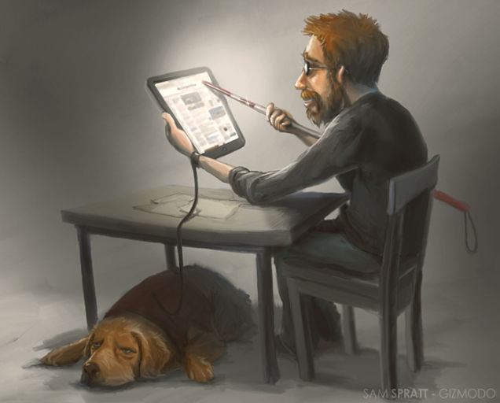
Översikt
- Seende vs icke-seende internetanvändning
- Verktyg
- Programmering med synskadade i åtanke
- Mobilsurf
- Framtiden
Webben när du inte kan se
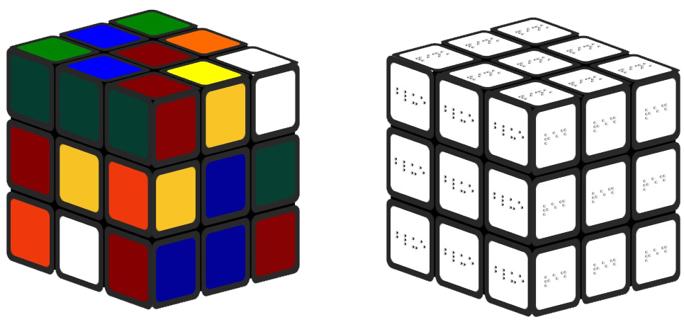
Varför blinda vill kunna använda internet.
(Och varför du ska se till att de kan.)
Verktyg
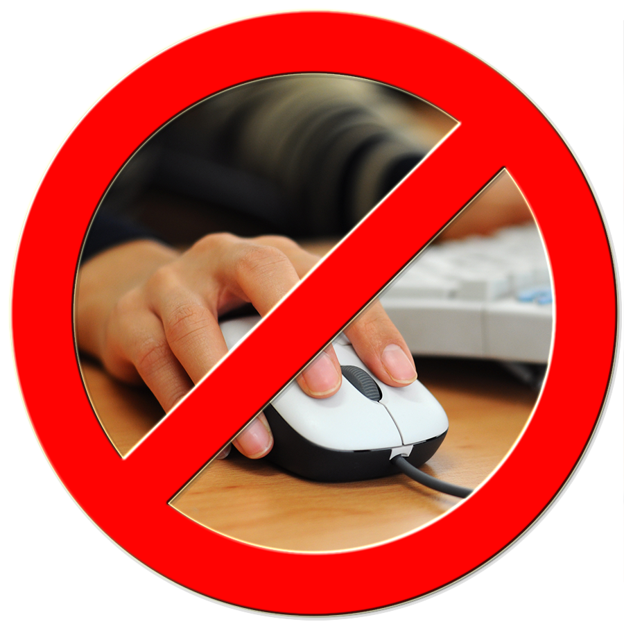
- Skärmläsare
- JAWS, 49.1%
- Window Eyes, 12.3%
- NVDA, 13.7%
Punktskrifts-läsare
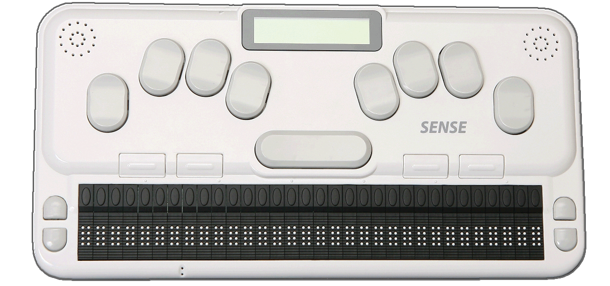
Styrkor
- Noggran
- Kan mata in data som ett tangentbord
Svagheter
- Långsam
- Punktskrif är ett krav
Skärmläsare
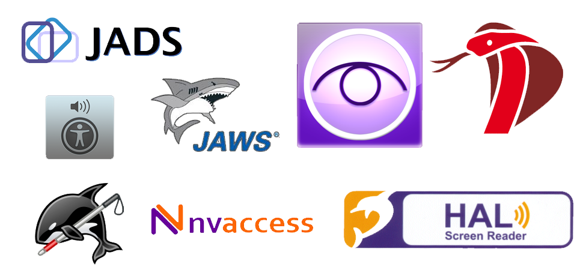
- Snabbare
- Anpassningsbar
- Finns ofta med i datorns operativsystem (Apple, Windows)
Vårt ansvar som programmerare
http://www.w3.org/TR/WCAG20/
Tabeller
Alt-taggar
Bilder som rubriker
Menyer & Överskrifter
Zoom
Språk
Störst men inte alltid bäst?
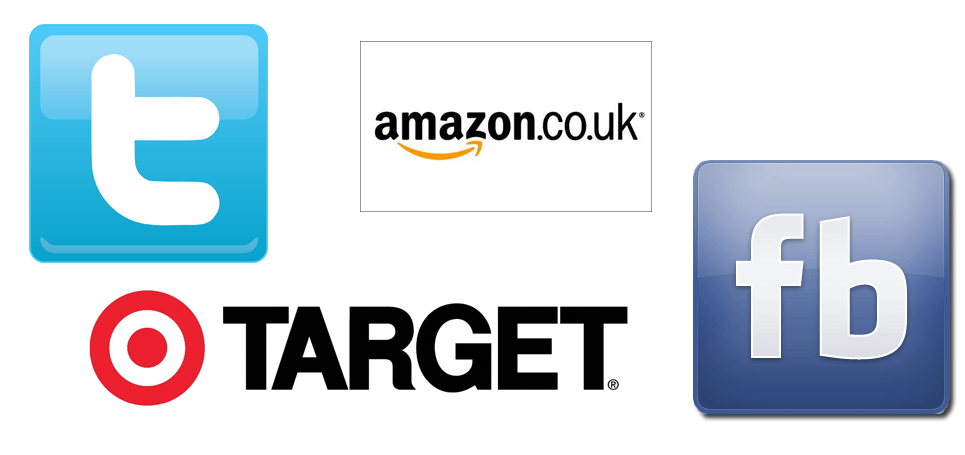
Mobilsurf
Skärmläsare (71.8%)
- 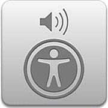VoiceOver (iOS) - 48.7% (Gratis)
- 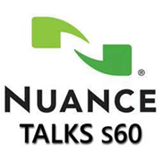Nuance Talks (Symbian) - 17.9%
- 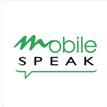Mobile Speak (Symbian and Windows Mobile) - 8.5%
- 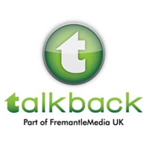TalkBack (Android) - 5.4% (Gratis)
- 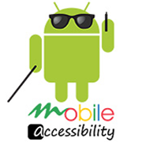Mobile Accessibility (Android) 3.8%
Appar
- 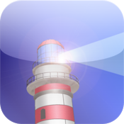Ariadne GPS
- 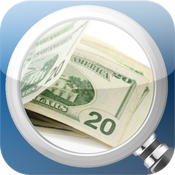LookTel Money Reader
- 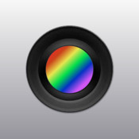Color ID Free
- 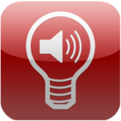Light Detector
- VM Alert - Video Motion Detector
- Hey Tell
- 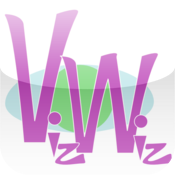VizWiz
Sammanfattning
Vad bör du tänka på?
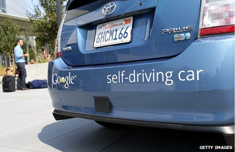
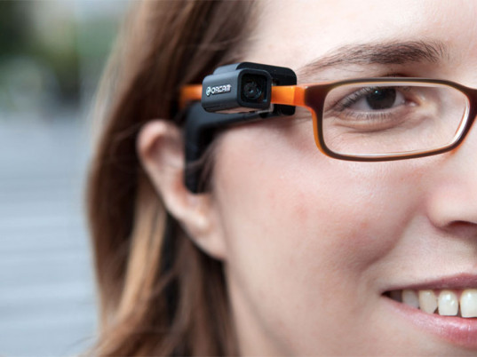
Framtiden
- IBM & Royal London Society for Blind People
- Bluetooth-glasögon
- AbilityNet's, BrainAble Projekt
- Google Ventures, Driverless Project
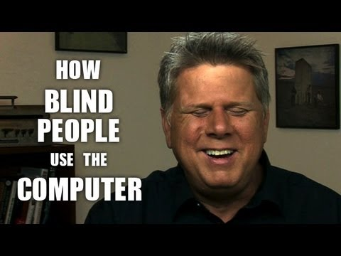
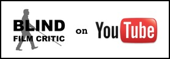